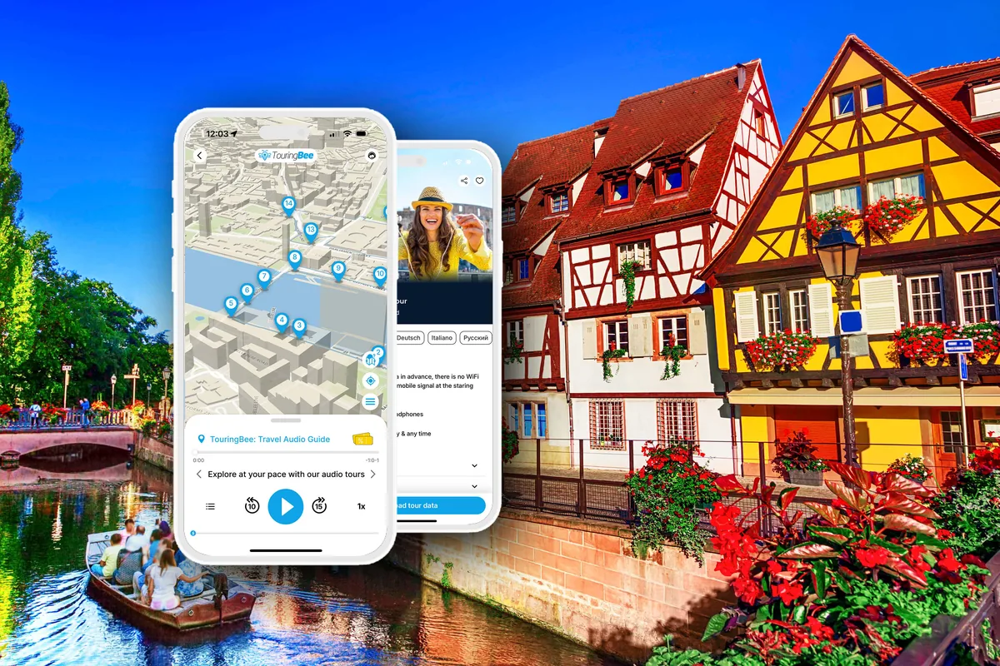

Главный вопрос здесь не «какой отель», а «что вы будете делать утром». Если гулять по Старому городу — живите в нём или рядом. Если ездить по региону общественным транспортом — у вокзала. Если на машине по винной дороге — там, где удобно парковаться. В Кольмаре от района зависит больше, чем от звёзд на фасаде.
Какой бы район вы ни выбрали, сам Старый город лучше исследовать пешком. Наш аудиогид не привязан ни ко времени, ни к месту встречи: прогулку можно начать утром от отеля, сразу после приезда с вокзала или ближе к вечеру и пройти центр в своём темпе.
Всё остальное о городе — в нашем полном гиде по Кольмару.
Коротко
| Где жить | Кому подходит | С машиной |
|---|---|---|
| Старый город | Тем, кто хочет выйти из отеля прямо на фахверковые улицы | Неудобно: центр в основном пешеходный |
| Маленькая Венеция | Тем, кто хочет каналы под окнами | Неудобно; есть отели рядом со своей парковкой |
| У вокзала | Без машины, с поездками по региону общественным транспортом | Можно |
| Немецкий квартал (южнее центра) | Тем, кому важнее тишина, чем открыточный вид | Можно |
| Окраины у выставочного центра | С машиной, для поездок по региону и винной дороге | Удобно: своя парковка, выезд на трассу |
| Винодельческая деревня | Тем, кто едет ради виноградников и готов ездить в город | Удобна; без машины смотрите Тюркхайм и деревни с прямым автобусом до Кольмара |
Старый город
Охраняемый исторический центр, большая пешеходная зона, дома от Средних веков до XVIII века. Жить здесь — значит выходить на улицу ранним утром, до основного дневного потока посетителей, и возвращаться вечером без транспорта.
Для примера: отель в доме Maison des Têtes, памятнике архитектуры на rue des Têtes, или Mercure Colmar Centre Unterlinden рядом с музеем Унтерлинден.
Если вы на машине, уточните парковку при бронировании. Центр в основном пешеходный, а в рождественский сезон въезд в центр закрывают в часы работы ярмарок. Подробности — в статье «Парковка в Кольмаре».
Маленькая Венеция
Река Лаух, цветные фасады, лодки — тот Кольмар, который знают по открыткам. Жить здесь — значит видеть набережные не только днём, но и ранним утром и поздним вечером.
Примеры: Hostellerie Le Maréchal в доме XVI века на канале и Le Colombier Suites в доме XVIII века с садом над водой. Чуть в стороне, в двух шагах от квартала, — Maison Turenne с платной крытой охраняемой парковкой. Вариант для тех, кто хочет жить у каналов и приехал на машине.
У вокзала
Самая практичная база без машины. Вокзал — в нескольких минутах ходьбы: отсюда легко уехать в Страсбург, Базель или на день по региону. До Старого города примерно четверть часа пешком, по центру ходит бесплатный шаттл (подробнее — в статье «Как добраться до Кольмара»).
Примеры: The Originals City Hôtel Colmar Gare рядом с вокзалом и Colmar Hôtel с круглосуточной стойкой, в десяти минутах пешком от Старого города.
Южнее центра: немецкий квартал
Официальный гид называет его одним из самых популярных районов современного Кольмара. Его строили в 1870–1918 годах, когда Эльзас был немецким: виллы и особняки в стилях от неороманского до ар-деко, зелень, река Лаух. Это просторный зелёный жилой район вне туристического ядра Старого города.
Подойдёт тем, кто едет на несколько дней и кому важнее зелень и спокойная жилая атмосфера, чем жизнь внутри Старого города.
Окраины, если вы на машине
Если машина нужна каждый день, удобнее жить у края города. Своя парковка, быстрый выезд на трассу и к винной дороге, а до центра можно доехать на машине или общественном транспорте.
Примеры у выставочного центра (Parc des Expositions): Ibis Styles Colmar Nord с охраняемой парковкой и подогреваемым бассейном, Arc En Ciel с большой бесплатной парковкой, B&B Colmar Expo. За городом, в Орбур-Вире, — L'Europe с бесплатной парковкой.
Кольмар или винодельческая деревня
Жить в деревне на винной дороге — другое путешествие. Утро среди виноградников, вечер в деревне, тишина. Цена — дорога в город: без машины каждый выезд в Кольмар надо подстраивать под расписание.
Без машины особенно удобен Тюркхайм: с Кольмаром его связывают поезд и автобусы. В часть других деревень тоже ходят прямые автобусы. Кемпинг Le Médiéval стоит в 500 метрах от исторического центра Тюркхайма, а в сезон по вечерам там можно застать традиционный обход ночного сторожа; зимой у него отдельный рождественский календарь.
Другие примеры из официального гида: Веттольсхайм — семейная гостиница Au Soleil в 5 км от Кольмара, на самой винной дороге; Кайзерсберг — Abbaye d'Alspach в бывшем монастыре XI века.
Как выбрать саму деревню, мы расскажем в статье про деревни рядом с Кольмаром.
Если едете на Рождество
В сезон ярмарок жильё в Кольмаре бронируют заранее. На машине помните: центр в часы работы ярмарок закрыт для автомобилей, так что отель в Старом городе на машине — это лишние хлопоты. Как устроены сами ярмарки — в статье «Рождественские ярмарки Кольмара», а как добавить к ним деревни — в «Рождественских ярмарках рядом с Кольмаром».
Если главная цель — винная дорога
Кольмар удобен как отправная точка для винной дороги. Если вы на машине, живите на окраине со своей парковкой или в винодельческой деревне. Если без машины — у вокзала: так проще уезжать на поезде и автобусе. И помните: дегустации и руль плохо сочетаются. Подробнее — в статье про винную дорогу.
Отель, квартира или гостевая комната
Во французских объявлениях встречается несколько типов жилья, и разница между ними не всегда очевидна. Официальный гид объясняет так:
| Тип | Что это |
|---|---|
| Chambre d'hôtes (B&B) | Комната в доме местного жителя, с завтраком и бельём. Не больше 5 комнат и 15 гостей |
| Chambre chez l'habitant | Комнаты у владельца, если сдаётся больше 5 комнат и/или размещается больше 15 человек; при этом объект не является отелем |
| Location saisonnière / meublé de tourisme | Меблированная квартира или дом, которые сдают целиком на короткий срок; у объекта может быть официальная классификация от 1 до 5 звёзд |
| Туристическая резиденция | Квартиры с общими службами: стойка, бассейн, прачечная |
Есть и бюджетные варианты: молодёжный хостел Mittelharth в 1 км от исторического центра и кемпинг Camping de l'Ill на берегу реки, с конца марта до начала января.

Город начинается от двери
Где бы вы ни остановились, Старый город лучше исследовать пешком. Аудиогид TouringBee — готовый маршрут по нему: 27 остановок, около полутора часов, без группы и встречи с гидом. Удобно вписать в вечер приезда или утро перед отъездом.
9,99 € · одна оплата, без подписки
- Полностью офлайн после загрузки
- Офлайн-карта показывает, где вы; аудиозапись на каждой остановке запускаете сами
- На английском, французском, немецком, итальянском, польском, испанском и русском
- iOS и Android, доступ на год
- Маршрут и тексты подготовлены профессионалами
- 4,6 из 5, больше 1000 путешественников
Частые ошибки
Бронировать отель в Старом городе, приезжая на машине, и не спросить про парковку. Центр в основном пешеходный, а в рождественский сезон въезд закрывают в часы работы ярмарок.
Жить в деревне без машины и ездить в Кольмар каждый день. Это возможно, но день начнёт строиться вокруг расписания. Без машины выбирайте деревню только после проверки транспортной связи с Кольмаром.
Выбирать район по одной фотографии. Маленькая Венеция красива, но если вы планируете уезжать на поезде каждое утро, удобнее жить у вокзала.
Оставлять бронирование на Рождество на последний момент. В сезон ярмарок жильё бронируют заранее.
Частые вопросы
Где удобнее остановиться в первую поездку?
Если хотите в основном гулять по городу — в Старом городе или у Маленькой Венеции. Если планируете много поездок по региону — у вокзала. Если вы на машине, выбирайте отель со своей парковкой.
Где остановиться без машины?
В Старом городе или у вокзала. У вокзала удобнее, если вы планируете поездки по региону поездом и автобусом.
Где остановиться с машиной?
На окраине со своей парковкой, например у выставочного центра, или в отеле рядом с центром, у которого есть собственная парковка.
Жить в Кольмаре или в винодельческой деревне?
В Кольмаре — если главное город и музеи. В деревне — если главное виноградники и вы с машиной. Без машины особенно удобен Тюркхайм благодаря железнодорожной связи; для других деревень заранее проверяйте прямые автобусы до Кольмара.
Есть ли в Кольмаре бюджетное жильё?
Да: молодёжный хостел Mittelharth и кемпинг Camping de l'Ill на берегу реки Иль.
Читать дальше
- Полный гид по Кольмару — всё о городе перед поездкой.
- Как добраться до Кольмара — поездом, самолётом, на машине.
- Парковка в Кольмаре — если вы на машине.
- Рождественские ярмарки Кольмара — если едете в декабре.
- Все гиды
Перед бронированием
Сначала решите, что будете делать утром: гулять по городу, садиться в поезд или в машину. Ответ подскажет район. А Старый город в любом случае лучше исследовать пешком: от двери отеля, от вокзала или от парковки.
Кольмар с историями в наушниках
27 остановок, полтора часа, в своём темпе. Одна оплата, работает офлайн, доступ на год.
Часть ссылок на этой странице — партнёрские, на Booking.com. Если вы бронируете через них, мы можем получить комиссию, для вас цена не меняется. Аудиогид TouringBee — наш собственный продукт. Подробнее — в разделе о партнёрских ссылках.